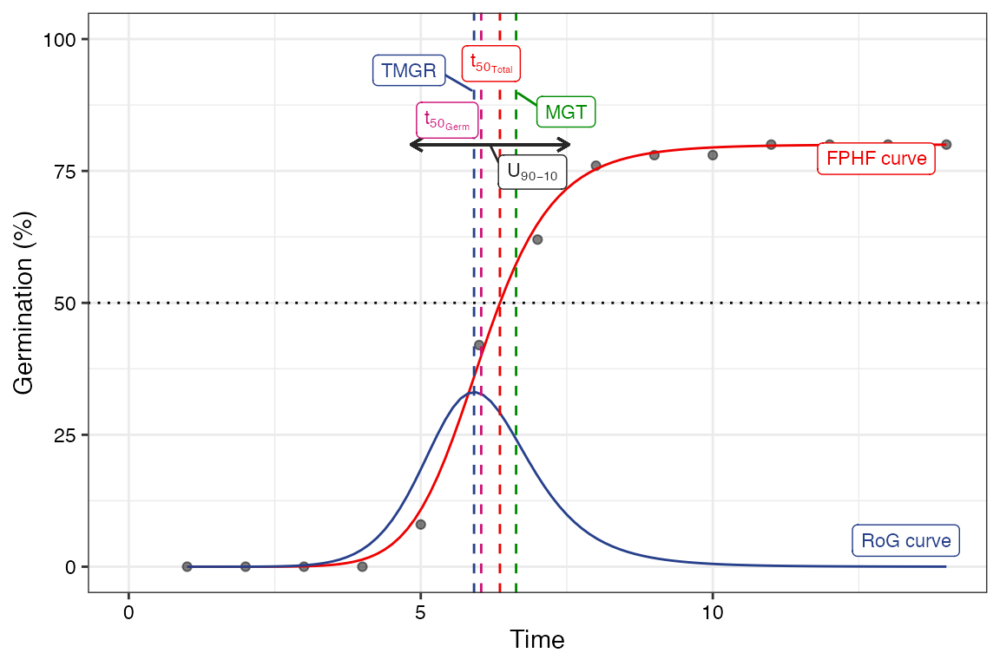
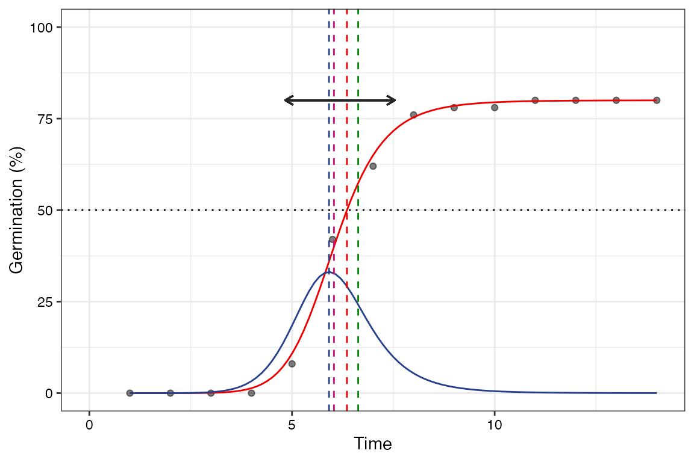
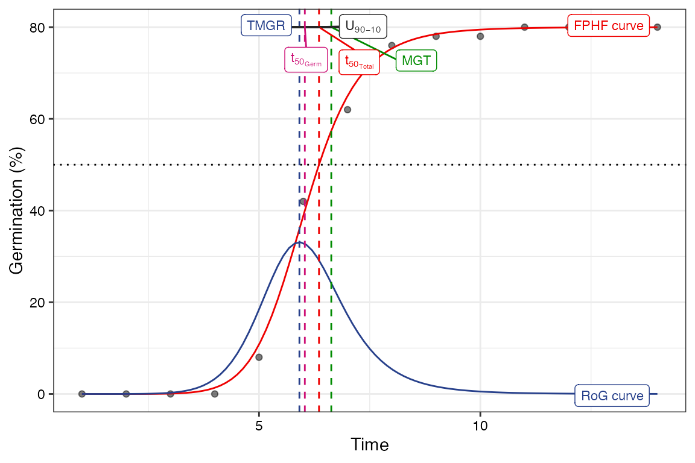
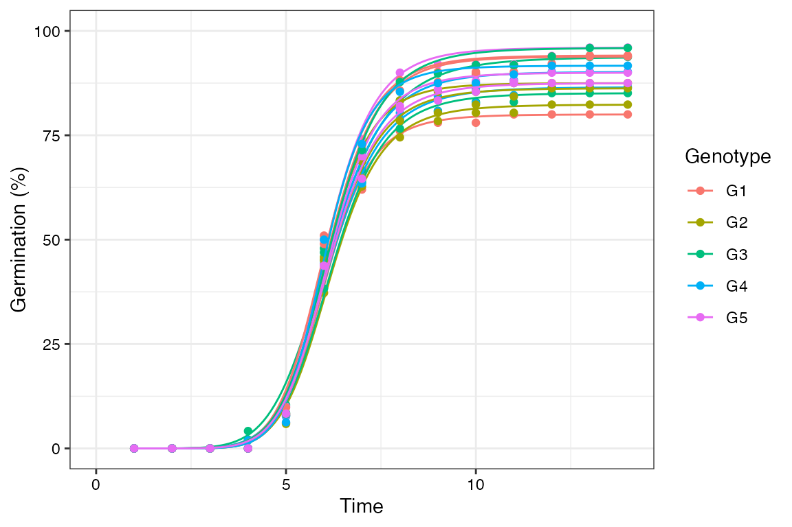
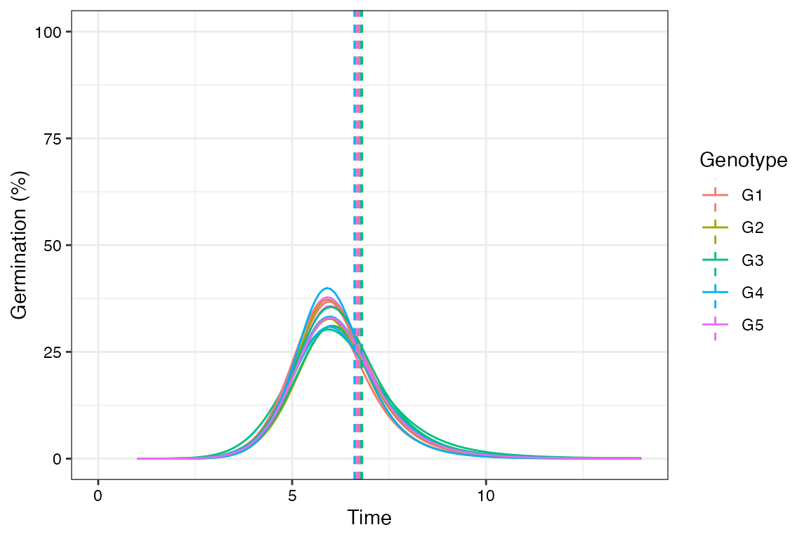

The germinationmetrics Package: A
Brief Introduction
Aravind, J., Vimala Devi, S., Radhamani, J., Jacob, S. R., and Kalyani Srinivasan
2023-05-13
Source:vignettes/Introduction.Rmd
Introduction.RmdICAR-National Bureau of Plant Genetic Resources, New Delhi.

Overview
The package germinationmetrics is a collection of
functions which implements various methods for describing the
time-course of germination in terms of single-value germination indices
as well as fitted curves.
The goal of this vignette is to introduce the users to these
functions and get started in describing sequentially recorded
germination count data. This document assumes a basic knowledge of
R programming language.
Installation
The package can be installed using the following functions:
# Install from CRAN
install.packages('germinationmetrics', dependencies=TRUE)
# Install development version from Github
devtools::install_github("aravind-j/germinationmetrics")Then the package can be loaded using the function
--------------------------------------------------------------------------------
Welcome to germinationmetrics version 0.1.7.9000
# To know how to use this package type:
browseVignettes(package = 'germinationmetrics')
for the package vignette.
# To know whats new in this version type:
news(package='germinationmetrics')
for the NEWS file.
# To cite the methods in the package type:
citation(package='germinationmetrics')
# To suppress this message use:
suppressPackageStartupMessages(library(germinationmetrics))
--------------------------------------------------------------------------------Version History
The current version of the package is 0.1.7. The previous versions are as follows.
Table 1. Version history of
germinationmetrics R package.
| Version | Date |
|---|---|
| 0.1.0 | 2018-04-17 |
| 0.1.1 | 2018-07-26 |
| 0.1.1.1 | 2018-10-16 |
| 0.1.2 | 2018-10-31 |
| 0.1.3 | 2019-01-19 |
| 0.1.4 | 2020-06-16 |
| 0.1.5 | 2021-02-17 |
| 0.1.6 | 2022-06-15 |
To know detailed history of changes use
news(package='germinationmetrics').
Germination count data
Typically in a germination test, the germination count data of a fixed number of seeds is recorded at regular intervals for a definite period of time or until all the seeds have germinated. These germination count data can be either partial or cumulative (Table 2).
Table 2 : A typical germination count data.
| intervals | counts | cumulative.counts |
|---|---|---|
| 1 | 0 | 0 |
| 2 | 0 | 0 |
| 3 | 0 | 0 |
| 4 | 0 | 0 |
| 5 | 4 | 4 |
| 6 | 17 | 21 |
| 7 | 10 | 31 |
| 8 | 7 | 38 |
| 9 | 1 | 39 |
| 10 | 0 | 39 |
| 11 | 1 | 40 |
| 12 | 0 | 40 |
| 13 | 0 | 40 |
| 14 | 0 | 40 |
The time-course of germination can be plotted as follows.
data <- data.frame(intervals = 1:14,
counts = c(0, 0, 0, 0, 4, 17, 10, 7, 1, 0, 1, 0, 0, 0))
# Partial germination counts
x <- data$counts
# Cumulative germination counts
y <- cumsum(x)
# Time intervals of observations
int <- data$intervals
plot(int, cumsum(x))Single-value germination indices
The details about the single-value germination indices implemented in
germinationmetrics are described in Table 3.
Table 3 : Single-value germination indices
implemented in germinationmetrics.
[1] "Package 'pander' and pandoc are required to generate this table."
GermPercent()
x <- c(0, 0, 0, 0, 4, 17, 10, 7, 1, 0, 1, 0, 0, 0)
y <- c(0, 0, 0, 0, 4, 21, 31, 38, 39, 39, 40, 40, 40, 40)
z <- c(0, 0, 0, 0, 11, 11, 9, 7, 1, 0, 1, 0, 0, 0)
int <- 1:length(x)
# From partial germination counts
#----------------------------------------------------------------------------
GermPercent(germ.counts = x, total.seeds = 50)[1] 80
PeakGermPercent(germ.counts = x, intervals = int, total.seeds = 50)[1] 34
# For multiple peak germination times
PeakGermPercent(germ.counts = z, intervals = int, total.seeds = 50)Warning in PeakGermPercent(germ.counts = z, intervals = int, total.seeds = 50):
Multiple peak germination times exist.[1] 22
# From cumulative germination counts
#----------------------------------------------------------------------------
GermPercent(germ.counts = y, total.seeds = 50, partial = FALSE)[1] 80
PeakGermPercent(germ.counts = y, intervals = int, total.seeds = 50,
partial = FALSE)[1] 34
# For multiple peak germination times
PeakGermPercent(germ.counts = cumsum(z), intervals = int, total.seeds = 50,
partial = FALSE)Warning in PeakGermPercent(germ.counts = cumsum(z), intervals = int,
total.seeds = 50, : Multiple peak germination times exist.[1] 22
# From number of germinated seeds
#----------------------------------------------------------------------------
GermPercent(germinated.seeds = 40, total.seeds = 50)[1] 80
FirstGermTime(), LastGermTime(), PeakGermTime(), TimeSpreadGerm()
x <- c(0, 0, 0, 0, 4, 17, 10, 7, 1, 0, 1, 0, 0, 0)
y <- c(0, 0, 0, 0, 4, 21, 31, 38, 39, 39, 40, 40, 40, 40)
z <- c(0, 0, 0, 0, 11, 11, 9, 7, 1, 0, 1, 0, 0, 0)
int <- 1:length(x)
# From partial germination counts
#----------------------------------------------------------------------------
FirstGermTime(germ.counts = x, intervals = int)[1] 5
LastGermTime(germ.counts = x, intervals = int)[1] 11
TimeSpreadGerm(germ.counts = x, intervals = int)[1] 6
PeakGermTime(germ.counts = x, intervals = int)[1] 6
# For multiple peak germination times
PeakGermTime(germ.counts = z, intervals = int)Warning in PeakGermTime(germ.counts = z, intervals = int): Multiple peak
germination times exist.[1] 5 6
# From cumulative germination counts
#----------------------------------------------------------------------------
FirstGermTime(germ.counts = y, intervals = int, partial = FALSE)[1] 5
LastGermTime(germ.counts = y, intervals = int, partial = FALSE)[1] 11
TimeSpreadGerm(germ.counts = y, intervals = int, partial = FALSE)[1] 6
PeakGermTime(germ.counts = y, intervals = int, partial = FALSE)[1] 6
# For multiple peak germination time
PeakGermTime(germ.counts = cumsum(z), intervals = int, partial = FALSE)Warning in PeakGermTime(germ.counts = cumsum(z), intervals = int, partial =
FALSE): Multiple peak germination times exist.[1] 5 6
t50()
x <- c(0, 0, 0, 0, 4, 17, 10, 7, 1, 0, 1, 0, 0, 0)
y <- c(0, 0, 0, 0, 4, 21, 31, 38, 39, 39, 40, 40, 40, 40)
int <- 1:length(x)
# From partial germination counts
#----------------------------------------------------------------------------
t50(germ.counts = x, intervals = int, method = "coolbear")[1] 5.970588
t50(germ.counts = x, intervals = int, method = "farooq")[1] 5.941176
# From cumulative germination counts
#----------------------------------------------------------------------------
t50(germ.counts = y, intervals = int, partial = FALSE, method = "coolbear")[1] 5.970588
t50(germ.counts = y, intervals = int, partial = FALSE, method = "farooq")[1] 5.941176
MeanGermTime(), VarGermTime(), SEGermTime(), CVGermTime()
x <- c(0, 0, 0, 0, 4, 17, 10, 7, 1, 0, 1, 0, 0, 0)
y <- c(0, 0, 0, 0, 4, 21, 31, 38, 39, 39, 40, 40, 40, 40)
int <- 1:length(x)
# From partial germination counts
#----------------------------------------------------------------------------
MeanGermTime(germ.counts = x, intervals = int)[1] 6.7
VarGermTime(germ.counts = x, intervals = int)[1] 1.446154
SEGermTime(germ.counts = x, intervals = int)[1] 0.1901416
CVGermTime(germ.counts = x, intervals = int)[1] 0.1794868
# From cumulative germination counts
#----------------------------------------------------------------------------
MeanGermTime(germ.counts = y, intervals = int, partial = FALSE)[1] 6.7
VarGermTime(germ.counts = y, intervals = int, partial = FALSE)[1] 19.04012
SEGermTime(germ.counts = y, intervals = int, partial = FALSE)[1] 0.2394781
CVGermTime(germ.counts = y, intervals = int, partial = FALSE)[1] 0.6512685
MeanGermRate(), CVG(), VarGermRate(), SEGermRate(), GermRateRecip()
x <- c(0, 0, 0, 0, 4, 17, 10, 7, 1, 0, 1, 0, 0, 0)
y <- c(0, 0, 0, 0, 4, 21, 31, 38, 39, 39, 40, 40, 40, 40)
int <- 1:length(x)
# From partial germination counts
#----------------------------------------------------------------------------
MeanGermRate(germ.counts = x, intervals = int)[1] 0.1492537
CVG(germ.counts = x, intervals = int)[1] 14.92537
VarGermRate(germ.counts = x, intervals = int)[1] 0.0007176543
SEGermRate(germ.counts = x, intervals = int)[1] 0.004235724
GermRateRecip(germ.counts = x, intervals = int, method = "coolbear")[1] 0.1674877
GermRateRecip(germ.counts = x, intervals = int, method = "farooq")[1] 0.1683168
# From cumulative germination counts
#----------------------------------------------------------------------------
MeanGermRate(germ.counts = y, intervals = int, partial = FALSE)[1] 0.1492537
CVG(germ.counts = y, intervals = int, partial = FALSE)[1] 14.92537
VarGermRate(germ.counts = y, intervals = int, partial = FALSE)[1] 0.009448666
SEGermRate(germ.counts = y, intervals = int, partial = FALSE)[1] 0.005334776
GermRateRecip(germ.counts = y, intervals = int,
method = "coolbear", partial = FALSE)[1] 0.1674877
GermRateRecip(germ.counts = y, intervals = int,
method = "farooq", partial = FALSE)[1] 0.1683168
GermSpeed(), GermSpeedAccumulated(), GermSpeedCorrected()
x <- c(0, 0, 0, 0, 4, 17, 10, 7, 1, 0, 1, 0, 0, 0)
y <- c(0, 0, 0, 0, 4, 21, 31, 38, 39, 39, 40, 40, 40, 40)
int <- 1:length(x)
# From partial germination counts
#----------------------------------------------------------------------------
GermSpeed(germ.counts = x, intervals = int)[1] 6.138925
GermSpeedAccumulated(germ.counts = x, intervals = int)[1] 34.61567
GermSpeedCorrected(germ.counts = x, intervals = int, total.seeds = 50,
method = "normal")[1] 0.1534731
GermSpeedCorrected(germ.counts = x, intervals = int, total.seeds = 50,
method = "accumulated")[1] 0.8653917
# From partial germination counts (with percentages instead of counts)
#----------------------------------------------------------------------------
GermSpeed(germ.counts = x, intervals = int,
percent = TRUE, total.seeds = 50)[1] 12.27785
GermSpeedAccumulated(germ.counts = x, intervals = int,
percent = TRUE, total.seeds = 50)[1] 69.23134
# From cumulative germination counts
#----------------------------------------------------------------------------
GermSpeed(germ.counts = y, intervals = int, partial = FALSE)[1] 6.138925
GermSpeedAccumulated(germ.counts = y, intervals = int, partial = FALSE)[1] 34.61567
GermSpeedCorrected(germ.counts = y, intervals = int,
partial = FALSE, total.seeds = 50, method = "normal")[1] 0.1534731
GermSpeedCorrected(germ.counts = y, intervals = int,
partial = FALSE, total.seeds = 50, method = "accumulated")[1] 0.8653917
# From cumulative germination counts (with percentages instead of counts)
#----------------------------------------------------------------------------
GermSpeed(germ.counts = y, intervals = int, partial = FALSE,
percent = TRUE, total.seeds = 50)[1] 12.27785
GermSpeedAccumulated(germ.counts = y, intervals = int, partial = FALSE,
percent = TRUE, total.seeds = 50)[1] 69.23134
WeightGermPercent()
x <- c(0, 0, 0, 0, 4, 17, 10, 7, 1, 0, 1, 0, 0, 0)
y <- c(0, 0, 0, 0, 4, 21, 31, 38, 39, 39, 40, 40, 40, 40)
int <- 1:length(x)
# From partial germination counts
#----------------------------------------------------------------------------
WeightGermPercent(germ.counts = x, total.seeds = 50, intervals = int)[1] 47.42857
# From cumulative germination counts
#----------------------------------------------------------------------------
WeightGermPercent(germ.counts = y, total.seeds = 50, intervals = int,
partial = FALSE)[1] 47.42857
MeanGermPercent(), MeanGermNumber()
x <- c(0, 0, 0, 0, 4, 17, 10, 7, 1, 0, 1, 0, 0, 0)
y <- c(0, 0, 0, 0, 4, 21, 31, 38, 39, 39, 40, 40, 40, 40)
int <- 1:length(x)
# From partial germination counts
#----------------------------------------------------------------------------
MeanGermPercent(germ.counts = x, total.seeds = 50, intervals = int)[1] 5.714286
MeanGermNumber(germ.counts = x, intervals = int)[1] 2.857143
# From cumulative germination counts
#----------------------------------------------------------------------------
MeanGermPercent(germ.counts = y, total.seeds = 50, intervals = int, partial = FALSE)[1] 5.714286
MeanGermNumber(germ.counts = y, intervals = int, partial = FALSE)[1] 2.857143
# From number of germinated seeds
#----------------------------------------------------------------------------
MeanGermPercent(germinated.seeds = 40, total.seeds = 50, intervals = int)[1] 5.714286
TimsonsIndex(), GermRateGeorge()
x <- c(0, 0, 0, 0, 4, 17, 10, 7, 1, 0, 1, 0, 0, 0)
y <- c(0, 0, 0, 0, 4, 21, 31, 38, 39, 39, 40, 40, 40, 40)
int <- 1:length(x)
# From partial germination counts
#----------------------------------------------------------------------------
# Wihout max specified
TimsonsIndex(germ.counts = x, intervals = int, total.seeds = 50)[1] 664
TimsonsIndex(germ.counts = x, intervals = int, total.seeds = 50,
modification = "none")[1] 664
TimsonsIndex(germ.counts = x, intervals = int, total.seeds = 50,
modification = "labouriau")[1] 8.3
TimsonsIndex(germ.counts = x, intervals = int, total.seeds = 50,
modification = "khanungar")[1] 47.42857
GermRateGeorge(germ.counts = x, intervals = int)[1] 332
# With max specified
TimsonsIndex(germ.counts = x, intervals = int, total.seeds = 50, max = 10)[1] 344
TimsonsIndex(germ.counts = x, intervals = int, total.seeds = 50,
max = 10, modification = "none")[1] 344
TimsonsIndex(germ.counts = x, intervals = int, total.seeds = 50,
max = 10, modification = "labouriau")[1] 4.410256
TimsonsIndex(germ.counts = x, intervals = int, total.seeds = 50,
max = 10, modification = "khanungar")[1] 24.57143
GermRateGeorge(germ.counts = x, intervals = int, max = 10)[1] 172
GermRateGeorge(germ.counts = x, intervals = int, max = 14)[1] 332
# From cumulative germination counts
#----------------------------------------------------------------------------
# Wihout max specified
TimsonsIndex(germ.counts = y, intervals = int, partial = FALSE,
total.seeds = 50)[1] 664
TimsonsIndex(germ.counts = y, intervals = int, partial = FALSE,
total.seeds = 50,
modification = "none")[1] 664
TimsonsIndex(germ.counts = y, intervals = int, partial = FALSE,
total.seeds = 50,
modification = "labouriau")[1] 8.3
TimsonsIndex(germ.counts = y, intervals = int, partial = FALSE,
total.seeds = 50,
modification = "khanungar")[1] 47.42857
GermRateGeorge(germ.counts = y, intervals = int, partial = FALSE,)[1] 332
# With max specified
TimsonsIndex(germ.counts = y, intervals = int, partial = FALSE,
total.seeds = 50, max = 10)[1] 344
TimsonsIndex(germ.counts = y, intervals = int, partial = FALSE,
total.seeds = 50,
max = 10, modification = "none")[1] 344
TimsonsIndex(germ.counts = y, intervals = int, partial = FALSE,
total.seeds = 50,
max = 10, modification = "labouriau")[1] 4.410256
TimsonsIndex(germ.counts = y, intervals = int, partial = FALSE,
total.seeds = 50,
max = 10, modification = "khanungar")[1] 24.57143
GermRateGeorge(germ.counts = y, intervals = int, partial = FALSE,
max = 10)[1] 172
GermRateGeorge(germ.counts = y, intervals = int, partial = FALSE,
max = 14)[1] 332
GermIndex()
x <- c(0, 0, 0, 0, 4, 17, 10, 7, 1, 0, 1, 0, 0, 0)
y <- c(0, 0, 0, 0, 4, 21, 31, 38, 39, 39, 40, 40, 40, 40)
int <- 1:length(x)
# From partial germination counts
#----------------------------------------------------------------------------
GermIndex(germ.counts = x, intervals = int, total.seeds = 50)[1] 5.84
GermIndex(germ.counts = x, intervals = int, total.seeds = 50,
modification = "none")[1] 5.84
GermIndex(germ.counts = x, intervals = int, total.seeds = 50,
modification = "santanaranal")[1] 7.3
# From cumulative germination counts
#----------------------------------------------------------------------------
GermIndex(germ.counts = y, intervals = int, partial = FALSE,
total.seeds = 50)[1] 5.84
GermIndex(germ.counts = y, intervals = int, partial = FALSE,
total.seeds = 50,
modification = "none")[1] 5.84
GermIndex(germ.counts = y, intervals = int, partial = FALSE,
total.seeds = 50,
modification = "santanaranal")[1] 7.3
EmergenceRateIndex()
x <- c(0, 0, 0, 0, 4, 17, 10, 7, 1, 0, 1, 0, 0, 0)
y <- c(0, 0, 0, 0, 4, 21, 31, 38, 39, 39, 40, 40, 40, 40)
int <- 1:length(x)
# From partial germination counts
#----------------------------------------------------------------------------
EmergenceRateIndex(germ.counts = x, intervals = int)[1] 292
EmergenceRateIndex(germ.counts = x, intervals = int,
method = "shmueligoldberg")[1] 292
EmergenceRateIndex(germ.counts = x, intervals = int,
method = "sgsantanaranal")[1] 7.3
EmergenceRateIndex(germ.counts = x, intervals = int,
method = "bilbrowanjura")[1] 5.970149
EmergenceRateIndex(germ.counts = x, intervals = int,
total.seeds = 50, method = "fakorede")[1] 8.375
# From cumulative germination counts
#----------------------------------------------------------------------------
EmergenceRateIndex(germ.counts = y, intervals = int, partial = FALSE,)[1] 292
EmergenceRateIndex(germ.counts = y, intervals = int, partial = FALSE,
method = "shmueligoldberg")[1] 292
EmergenceRateIndex(germ.counts = y, intervals = int, partial = FALSE,
method = "sgsantanaranal")[1] 7.3
EmergenceRateIndex(germ.counts = y, intervals = int, partial = FALSE,
method = "bilbrowanjura")[1] 5.970149
EmergenceRateIndex(germ.counts = y, intervals = int, partial = FALSE,
total.seeds = 50, method = "fakorede")[1] 8.375
PeakValue(), GermValue()
x <- c(0, 0, 34, 40, 21, 10, 4, 5, 3, 5, 8, 7, 7, 6, 6, 4, 0, 2, 0, 2)
y <- c(0, 0, 34, 74, 95, 105, 109, 114, 117, 122, 130, 137, 144, 150,
156, 160, 160, 162, 162, 164)
int <- 1:length(x)
total.seeds = 200
# From partial germination counts
#----------------------------------------------------------------------------
PeakValue(germ.counts = x, intervals = int, total.seeds = 200)[1] 9.5
GermValue(germ.counts = x, intervals = int, total.seeds = 200,
method = "czabator")$`Germination Value`
[1] 38.95
[[2]]
germ.counts intervals Cumulative.germ.counts Cumulative.germ.percent
3 34 3 34 17.0
4 40 4 74 37.0
5 21 5 95 47.5
6 10 6 105 52.5
7 4 7 109 54.5
8 5 8 114 57.0
9 3 9 117 58.5
10 5 10 122 61.0
11 8 11 130 65.0
12 7 12 137 68.5
13 7 13 144 72.0
14 6 14 150 75.0
15 6 15 156 78.0
16 4 16 160 80.0
17 0 17 160 80.0
18 2 18 162 81.0
19 0 19 162 81.0
20 2 20 164 82.0
DGS
3 5.666667
4 9.250000
5 9.500000
6 8.750000
7 7.785714
8 7.125000
9 6.500000
10 6.100000
11 5.909091
12 5.708333
13 5.538462
14 5.357143
15 5.200000
16 5.000000
17 4.705882
18 4.500000
19 4.263158
20 4.100000
GermValue(germ.counts = x, intervals = int, total.seeds = 200,
method = "dp", k = 10)$`Germination Value`
[1] 53.36595
[[2]]
germ.counts intervals Cumulative.germ.counts Cumulative.germ.percent
3 34 3 34 17.0
4 40 4 74 37.0
5 21 5 95 47.5
6 10 6 105 52.5
7 4 7 109 54.5
8 5 8 114 57.0
9 3 9 117 58.5
10 5 10 122 61.0
11 8 11 130 65.0
12 7 12 137 68.5
13 7 13 144 72.0
14 6 14 150 75.0
15 6 15 156 78.0
16 4 16 160 80.0
17 0 17 160 80.0
18 2 18 162 81.0
19 0 19 162 81.0
20 2 20 164 82.0
DGS SumDGSbyN GV
3 5.666667 5.666667 9.633333
4 9.250000 7.458333 27.595833
5 9.500000 8.138889 38.659722
6 8.750000 8.291667 43.531250
7 7.785714 8.190476 44.638095
8 7.125000 8.012897 45.673512
9 6.500000 7.796769 45.611097
10 6.100000 7.584673 46.266503
11 5.909091 7.398497 48.090230
12 5.708333 7.229481 49.521942
13 5.538462 7.075752 50.945411
14 5.357143 6.932534 51.994006
15 5.200000 6.799262 53.034246
16 5.000000 6.670744 53.365948
17 4.705882 6.539753 52.318022
18 4.500000 6.412268 51.939373
19 4.263158 6.285850 50.915385
20 4.100000 6.164414 50.548194
$testend
[1] 16
GermValue(germ.counts = x, intervals = int, total.seeds = 200,
method = "czabator", from.onset = FALSE)$`Germination Value`
[1] 38.95
[[2]]
germ.counts intervals Cumulative.germ.counts Cumulative.germ.percent
1 0 1 0 0.0
2 0 2 0 0.0
3 34 3 34 17.0
4 40 4 74 37.0
5 21 5 95 47.5
6 10 6 105 52.5
7 4 7 109 54.5
8 5 8 114 57.0
9 3 9 117 58.5
10 5 10 122 61.0
11 8 11 130 65.0
12 7 12 137 68.5
13 7 13 144 72.0
14 6 14 150 75.0
15 6 15 156 78.0
16 4 16 160 80.0
17 0 17 160 80.0
18 2 18 162 81.0
19 0 19 162 81.0
20 2 20 164 82.0
DGS
1 0.000000
2 0.000000
3 5.666667
4 9.250000
5 9.500000
6 8.750000
7 7.785714
8 7.125000
9 6.500000
10 6.100000
11 5.909091
12 5.708333
13 5.538462
14 5.357143
15 5.200000
16 5.000000
17 4.705882
18 4.500000
19 4.263158
20 4.100000
GermValue(germ.counts = x, intervals = int, total.seeds = 200,
method = "dp", k = 10, from.onset = FALSE)$`Germination Value`
[1] 46.6952
[[2]]
germ.counts intervals Cumulative.germ.counts Cumulative.germ.percent
1 0 1 0 0.0
2 0 2 0 0.0
3 34 3 34 17.0
4 40 4 74 37.0
5 21 5 95 47.5
6 10 6 105 52.5
7 4 7 109 54.5
8 5 8 114 57.0
9 3 9 117 58.5
10 5 10 122 61.0
11 8 11 130 65.0
12 7 12 137 68.5
13 7 13 144 72.0
14 6 14 150 75.0
15 6 15 156 78.0
16 4 16 160 80.0
17 0 17 160 80.0
18 2 18 162 81.0
19 0 19 162 81.0
20 2 20 164 82.0
DGS SumDGSbyN GV
1 0.000000 0.000000 0.000000
2 0.000000 0.000000 0.000000
3 5.666667 1.888889 3.211111
4 9.250000 3.729167 13.797917
5 9.500000 4.883333 23.195833
6 8.750000 5.527778 29.020833
7 7.785714 5.850340 31.884354
8 7.125000 6.009673 34.255134
9 6.500000 6.064153 35.475298
10 6.100000 6.067738 37.013202
11 5.909091 6.053316 39.346552
12 5.708333 6.024567 41.268285
13 5.538462 5.987174 43.107655
14 5.357143 5.942172 44.566291
15 5.200000 5.892694 45.963013
16 5.000000 5.836901 46.695205
17 4.705882 5.770370 46.162961
18 4.500000 5.699794 46.168331
19 4.263158 5.624182 45.555871
20 4.100000 5.547972 45.493374
$testend
[1] 16
# From cumulative germination counts
#----------------------------------------------------------------------------
PeakValue(germ.counts = y, interval = int, total.seeds = 200,
partial = FALSE)[1] 9.5
GermValue(germ.counts = y, intervals = int, total.seeds = 200,
partial = FALSE, method = "czabator")$`Germination Value`
[1] 38.95
[[2]]
germ.counts intervals Cumulative.germ.counts Cumulative.germ.percent
3 34 3 34 17.0
4 40 4 74 37.0
5 21 5 95 47.5
6 10 6 105 52.5
7 4 7 109 54.5
8 5 8 114 57.0
9 3 9 117 58.5
10 5 10 122 61.0
11 8 11 130 65.0
12 7 12 137 68.5
13 7 13 144 72.0
14 6 14 150 75.0
15 6 15 156 78.0
16 4 16 160 80.0
17 0 17 160 80.0
18 2 18 162 81.0
19 0 19 162 81.0
20 2 20 164 82.0
DGS
3 5.666667
4 9.250000
5 9.500000
6 8.750000
7 7.785714
8 7.125000
9 6.500000
10 6.100000
11 5.909091
12 5.708333
13 5.538462
14 5.357143
15 5.200000
16 5.000000
17 4.705882
18 4.500000
19 4.263158
20 4.100000
GermValue(germ.counts = y, intervals = int, total.seeds = 200,
partial = FALSE, method = "dp", k = 10)$`Germination Value`
[1] 53.36595
[[2]]
germ.counts intervals Cumulative.germ.counts Cumulative.germ.percent
3 34 3 34 17.0
4 40 4 74 37.0
5 21 5 95 47.5
6 10 6 105 52.5
7 4 7 109 54.5
8 5 8 114 57.0
9 3 9 117 58.5
10 5 10 122 61.0
11 8 11 130 65.0
12 7 12 137 68.5
13 7 13 144 72.0
14 6 14 150 75.0
15 6 15 156 78.0
16 4 16 160 80.0
17 0 17 160 80.0
18 2 18 162 81.0
19 0 19 162 81.0
20 2 20 164 82.0
DGS SumDGSbyN GV
3 5.666667 5.666667 9.633333
4 9.250000 7.458333 27.595833
5 9.500000 8.138889 38.659722
6 8.750000 8.291667 43.531250
7 7.785714 8.190476 44.638095
8 7.125000 8.012897 45.673512
9 6.500000 7.796769 45.611097
10 6.100000 7.584673 46.266503
11 5.909091 7.398497 48.090230
12 5.708333 7.229481 49.521942
13 5.538462 7.075752 50.945411
14 5.357143 6.932534 51.994006
15 5.200000 6.799262 53.034246
16 5.000000 6.670744 53.365948
17 4.705882 6.539753 52.318022
18 4.500000 6.412268 51.939373
19 4.263158 6.285850 50.915385
20 4.100000 6.164414 50.548194
$testend
[1] 16
GermValue(germ.counts = y, intervals = int, total.seeds = 200,
partial = FALSE, method = "czabator", from.onset = FALSE)$`Germination Value`
[1] 38.95
[[2]]
germ.counts intervals Cumulative.germ.counts Cumulative.germ.percent
1 0 1 0 0.0
2 0 2 0 0.0
3 34 3 34 17.0
4 40 4 74 37.0
5 21 5 95 47.5
6 10 6 105 52.5
7 4 7 109 54.5
8 5 8 114 57.0
9 3 9 117 58.5
10 5 10 122 61.0
11 8 11 130 65.0
12 7 12 137 68.5
13 7 13 144 72.0
14 6 14 150 75.0
15 6 15 156 78.0
16 4 16 160 80.0
17 0 17 160 80.0
18 2 18 162 81.0
19 0 19 162 81.0
20 2 20 164 82.0
DGS
1 0.000000
2 0.000000
3 5.666667
4 9.250000
5 9.500000
6 8.750000
7 7.785714
8 7.125000
9 6.500000
10 6.100000
11 5.909091
12 5.708333
13 5.538462
14 5.357143
15 5.200000
16 5.000000
17 4.705882
18 4.500000
19 4.263158
20 4.100000
GermValue(germ.counts = y, intervals = int, total.seeds = 200,
partial = FALSE, method = "dp", k = 10, from.onset = FALSE)$`Germination Value`
[1] 46.6952
[[2]]
germ.counts intervals Cumulative.germ.counts Cumulative.germ.percent
1 0 1 0 0.0
2 0 2 0 0.0
3 34 3 34 17.0
4 40 4 74 37.0
5 21 5 95 47.5
6 10 6 105 52.5
7 4 7 109 54.5
8 5 8 114 57.0
9 3 9 117 58.5
10 5 10 122 61.0
11 8 11 130 65.0
12 7 12 137 68.5
13 7 13 144 72.0
14 6 14 150 75.0
15 6 15 156 78.0
16 4 16 160 80.0
17 0 17 160 80.0
18 2 18 162 81.0
19 0 19 162 81.0
20 2 20 164 82.0
DGS SumDGSbyN GV
1 0.000000 0.000000 0.000000
2 0.000000 0.000000 0.000000
3 5.666667 1.888889 3.211111
4 9.250000 3.729167 13.797917
5 9.500000 4.883333 23.195833
6 8.750000 5.527778 29.020833
7 7.785714 5.850340 31.884354
8 7.125000 6.009673 34.255134
9 6.500000 6.064153 35.475298
10 6.100000 6.067738 37.013202
11 5.909091 6.053316 39.346552
12 5.708333 6.024567 41.268285
13 5.538462 5.987174 43.107655
14 5.357143 5.942172 44.566291
15 5.200000 5.892694 45.963013
16 5.000000 5.836901 46.695205
17 4.705882 5.770370 46.162961
18 4.500000 5.699794 46.168331
19 4.263158 5.624182 45.555871
20 4.100000 5.547972 45.493374
$testend
[1] 16
CUGerm()
x <- c(0, 0, 0, 0, 4, 17, 10, 7, 1, 0, 1, 0, 0, 0)
y <- c(0, 0, 0, 0, 4, 21, 31, 38, 39, 39, 40, 40, 40, 40)
int <- 1:length(x)
# From partial germination counts
#----------------------------------------------------------------------------
CUGerm(germ.counts = x, intervals = int)[1] 0.7092199
# From cumulative germination counts
#----------------------------------------------------------------------------
CUGerm(germ.counts = y, intervals = int, partial = FALSE)[1] 0.05267935
GermSynchrony(), GermUncertainty()
x <- c(0, 0, 0, 0, 4, 17, 10, 7, 1, 0, 1, 0, 0, 0)
y <- c(0, 0, 0, 0, 4, 21, 31, 38, 39, 39, 40, 40, 40, 40)
int <- 1:length(x)
# From partial germination counts
#----------------------------------------------------------------------------
GermSynchrony(germ.counts = x, intervals = int)[1] 0.2666667
GermUncertainty(germ.counts = x, intervals = int)[1] 2.062987
# From cumulative germination counts
#----------------------------------------------------------------------------
GermSynchrony(germ.counts = y, intervals = int, partial = FALSE)[1] 0.2666667
GermUncertainty(germ.counts = y, intervals = int, partial = FALSE)[1] 2.062987Non-linear regression analysis
Several mathematical functions have been used to fit the cumulative
germination count data and describe the germination process by
non-linear regression analysis. They include functions such as
Richard’s, Weibull, logistic, log-logistic, gaussian, four-parameter
hill function etc. Currently germinationmetrics implements
the four-parameter hill function to fit the count data and computed
various associated metrics.
Four-parameter hill function
The four-parameter hill function defined as follows (El-Kassaby et al., 2008).
\[ f(x) = y = y_0 + \frac{ax^b}{x^b+c^b} \] Where, \(y\) is the cumulative germination percentage at time \(x\), \(y_{0}\) is the intercept on the y axis, \(a\) is the asymptote, \(b\) is a mathematical parameter controlling the shape and steepness of the germination curve and \(c\) is the “half-maximal activation level”.
The details of various parameters that are computed from this function are given in Table 4.
Table 4 Germination parameters estimated from the four-parameter hill function.
[1] "Package 'pander' and pandoc are required to generate this table."
FourPHFfit()
x <- c(0, 0, 0, 0, 4, 17, 10, 7, 1, 0, 1, 0, 0, 0)
y <- c(0, 0, 0, 0, 4, 21, 31, 38, 39, 39, 40, 40, 40, 40)
int <- 1:length(x)
total.seeds = 50
# From partial germination counts
#----------------------------------------------------------------------------
FourPHFfit(germ.counts = x, intervals = int, total.seeds = 50, tmax = 20)$data
gp csgp intervals
1 0 0 1
2 0 0 2
3 0 0 3
4 0 0 4
5 8 8 5
6 34 42 6
7 20 62 7
8 14 76 8
9 2 78 9
10 0 78 10
11 2 80 11
12 0 80 12
13 0 80 13
14 0 80 14
$Parameters
term estimate std.error statistic p.value
1 a 80.000000 1.24158597 64.43372 1.973240e-14
2 b 9.881947 0.70779381 13.96162 6.952324e-08
3 c 6.034954 0.04952654 121.85294 3.399384e-17
4 y0 0.000000 0.91607007 0.00000 1.000000e+00
$Fit
sigma isConv finTol logLik AIC BIC deviance df.residual
1 1.769385 TRUE 1.490116e-08 -25.49868 60.99736 64.19265 31.30723 10
nobs
1 14
$a
[1] 80
$b
[1] 9.881947
$c
[1] 6.034954
$y0
[1] 0
$lag
[1] 0
$Dlag50
[1] 6.034954
$t50.total
[1] 6.355122
$txp.total
10 60
4.956266 6.744598
$t50.Germinated
[1] 6.034954
$txp.Germinated
10 60
4.831809 6.287724
$Uniformity
90 10 uniformity
7.537688 4.831809 2.705880
$TMGR
[1] 5.912195
$AUC
[1] 1108.975
$MGT
[1] 6.632252
$Skewness
[1] 1.098973
$msg
[1] "#1. Relative error in the sum of squares is at most `ftol'. "
$isConv
[1] TRUE
attr(,"class")
[1] "FourPHFfit" "list"
# From cumulative germination counts
#----------------------------------------------------------------------------
FourPHFfit(germ.counts = y, intervals = int, total.seeds = 50, tmax = 20,
partial = FALSE)$data
gp csgp intervals
1 0 0 1
2 0 0 2
3 0 0 3
4 0 0 4
5 8 8 5
6 34 42 6
7 20 62 7
8 14 76 8
9 2 78 9
10 0 78 10
11 2 80 11
12 0 80 12
13 0 80 13
14 0 80 14
$Parameters
term estimate std.error statistic p.value
1 a 80.000000 1.2415867 64.43368 1.973252e-14
2 b 9.881927 0.7077918 13.96163 6.952270e-08
3 c 6.034953 0.0495266 121.85275 3.399437e-17
4 y0 0.000000 0.9160705 0.00000 1.000000e+00
$Fit
sigma isConv finTol logLik AIC BIC deviance df.residual
1 1.769385 TRUE 1.490116e-08 -25.49868 60.99736 64.19265 31.30723 10
nobs
1 14
$a
[1] 80
$b
[1] 9.881927
$c
[1] 6.034953
$y0
[1] 0
$lag
[1] 0
$Dlag50
[1] 6.034953
$t50.total
[1] 6.355121
$txp.total
10 60
4.956263 6.744599
$t50.Germinated
[1] 6.034953
$txp.Germinated
10 60
4.831806 6.287723
$Uniformity
90 10 uniformity
7.537691 4.831806 2.705885
$TMGR
[1] 5.912194
$AUC
[1] 1108.976
$MGT
[1] 6.632252
$Skewness
[1] 1.098973
$msg
[1] "#1. Relative error in the sum of squares is at most `ftol'. "
$isConv
[1] TRUE
attr(,"class")
[1] "FourPHFfit" "list"
x <- c(0, 0, 0, 0, 4, 17, 10, 7, 1, 0, 1, 0, 0, 0)
y <- c(0, 0, 0, 0, 4, 21, 31, 38, 39, 39, 40, 40, 40, 40)
int <- 1:length(x)
total.seeds = 50
# From partial germination counts
#----------------------------------------------------------------------------
fit1 <- FourPHFfit(germ.counts = x, intervals = int,
total.seeds = 50, tmax = 20)
# From cumulative germination counts
#----------------------------------------------------------------------------
fit2 <- FourPHFfit(germ.counts = y, intervals = int,
total.seeds = 50, tmax = 20, partial = FALSE)
# Default plots
plot(fit1)
plot(fit2)
# No labels
plot(fit1, plotlabels = FALSE)
plot(fit2, plotlabels = FALSE)
# Only the FPHF curve
plot(fit1, rog = FALSE, t50.total = FALSE, t50.germ = FALSE,
tmgr = FALSE, mgt = FALSE, uniformity = FALSE)
plot(fit2, rog = FALSE, t50.total = FALSE, t50.germ = FALSE,
tmgr = FALSE, mgt = FALSE, uniformity = FALSE)
# Without y axis limits adjustment
plot(fit1, limits = FALSE)
plot(fit2, limits = FALSE)
Wrapper functions
Wrapper functions germination.indices() and
FourPHFfit.bulk() are available in the package for
computing results for multiple samples in batch from a data frame of
germination counts recorded at specific time intervals.
germination.indices()
This wrapper function can be used to compute several germination indices simultaneously for multiple samples in batch.
data(gcdata)
counts.per.intervals <- c("Day01", "Day02", "Day03", "Day04", "Day05",
"Day06", "Day07", "Day08", "Day09", "Day10",
"Day11", "Day12", "Day13", "Day14")
germination.indices(gcdata, total.seeds.col = "Total Seeds",
counts.intervals.cols = counts.per.intervals,
intervals = 1:14, partial = TRUE, max.int = 5) Genotype Rep Day01 Day02 Day03 Day04 Day05 Day06 Day07 Day08 Day09 Day10
1 G1 1 0 0 0 0 4 17 10 7 1 0
2 G2 1 0 0 0 1 3 15 13 6 2 1
3 G3 1 0 0 0 2 3 18 9 8 2 1
4 G4 1 0 0 0 0 4 19 12 6 2 1
5 G5 1 0 0 0 0 5 20 12 8 1 0
6 G1 2 0 0 0 0 3 21 11 7 1 1
7 G2 2 0 0 0 0 4 18 11 7 1 0
8 G3 2 0 0 0 1 3 14 12 6 2 1
9 G4 2 0 0 0 1 3 19 10 8 1 1
10 G5 2 0 0 0 0 4 18 13 6 2 1
11 G1 3 0 0 0 0 5 21 11 8 1 0
12 G2 3 0 0 0 0 3 20 10 7 1 1
13 G3 3 0 0 0 0 4 19 12 8 1 1
14 G4 3 0 0 0 0 3 21 11 6 1 0
15 G5 3 0 0 0 0 4 17 10 8 1 1
Day11 Day12 Day13 Day14 Total Seeds GermPercent PeakGermPercent
1 1 0 0 0 50 80.00000 34.00000
2 0 1 0 0 51 82.35294 29.41176
3 1 1 0 0 48 93.75000 37.50000
4 1 1 0 0 51 90.19608 37.25490
5 0 1 1 0 50 96.00000 40.00000
6 1 1 0 0 49 93.87755 42.85714
7 1 0 0 0 48 87.50000 37.50000
8 0 1 0 0 47 85.10638 29.78723
9 1 1 0 0 52 86.53846 36.53846
10 0 1 0 0 50 90.00000 36.00000
11 0 1 1 0 51 94.11765 41.17647
12 1 1 0 0 51 86.27451 39.21569
13 0 1 1 0 49 95.91837 38.77551
14 1 1 0 0 48 91.66667 43.75000
15 1 0 0 0 48 87.50000 35.41667
FirstGermTime LastGermTime PeakGermTime TimeSpreadGerm t50_Coolbear
1 5 11 6 6 5.970588
2 4 12 6 8 6.192308
3 4 12 6 8 6.000000
4 5 12 6 7 6.041667
5 5 13 6 8 5.975000
6 5 12 6 7 5.976190
7 5 11 6 6 5.972222
8 4 12 6 8 6.208333
9 4 12 6 8 6.000000
10 5 12 6 7 6.076923
11 5 13 6 8 5.928571
12 5 12 6 7 5.975000
13 5 13 6 8 6.083333
14 5 12 6 7 5.928571
15 5 11 6 6 6.050000
t50_Farooq MeanGermTime VarGermTime SEGermTime CVGermTime MeanGermRate
1 5.941176 6.700000 1.446154 0.1901416 0.1794868 0.1492537
2 6.153846 6.857143 2.027875 0.2197333 0.2076717 0.1458333
3 5.972222 6.866667 2.572727 0.2391061 0.2335882 0.1456311
4 6.000000 6.891304 2.187923 0.2180907 0.2146419 0.1451104
5 5.950000 6.812500 2.368351 0.2221275 0.2259002 0.1467890
6 5.952381 6.869565 2.071498 0.2122088 0.2095140 0.1455696
7 5.944444 6.690476 1.389663 0.1818989 0.1761967 0.1494662
8 6.166667 6.875000 2.112179 0.2297923 0.2113940 0.1454545
9 5.973684 6.866667 2.300000 0.2260777 0.2208604 0.1456311
10 6.038462 6.822222 1.831313 0.2017321 0.1983606 0.1465798
11 5.904762 6.791667 2.381206 0.2227295 0.2272072 0.1472393
12 5.950000 6.886364 2.149577 0.2210295 0.2129053 0.1452145
13 6.041667 6.936170 2.539315 0.2324392 0.2297410 0.1441718
14 5.904762 6.772727 1.900634 0.2078370 0.2035568 0.1476510
15 6.000000 6.809524 1.670151 0.1994129 0.1897847 0.1468531
VarGermRate SEGermRate CVG GermRateRecip_Coolbear
1 0.0007176543 0.004235724 14.92537 0.1674877
2 0.0009172090 0.004673148 14.58333 0.1614907
3 0.0011572039 0.005071059 14.56311 0.1666667
4 0.0009701218 0.004592342 14.51104 0.1655172
5 0.0010995627 0.004786184 14.67890 0.1673640
6 0.0009301809 0.004496813 14.55696 0.1673307
7 0.0006935558 0.004063648 14.94662 0.1674419
8 0.0009454531 0.004861721 14.54545 0.1610738
9 0.0010345321 0.004794747 14.56311 0.1666667
10 0.0008453940 0.004334343 14.65798 0.1645570
11 0.0011191581 0.004828643 14.72393 0.1686747
12 0.0009558577 0.004660905 14.52145 0.1673640
13 0.0010970785 0.004831366 14.41718 0.1643836
14 0.0009033254 0.004531018 14.76510 0.1686747
15 0.0007767634 0.004300508 14.68531 0.1652893
GermRateRecip_Farooq GermSpeed_Count GermSpeed_Percent
1 0.1683168 6.138925 12.27785
2 0.1625000 6.362698 12.47588
3 0.1674419 6.882179 14.33787
4 0.1666667 6.927417 13.58317
5 0.1680672 7.318987 14.63797
6 0.1680000 6.931782 14.14649
7 0.1682243 6.448449 13.43427
8 0.1621622 6.053175 12.87909
9 0.1674009 6.830592 13.13575
10 0.1656051 6.812698 13.62540
11 0.1693548 7.342796 14.39764
12 0.1680672 6.622258 12.98482
13 0.1655172 7.052320 14.39249
14 0.1693548 6.706782 13.97246
15 0.1666667 6.363925 13.25818
GermSpeedAccumulated_Count GermSpeedAccumulated_Percent
1 34.61567 69.23134
2 35.54058 69.68741
3 38.29725 79.78594
4 38.68453 75.85202
5 41.00786 82.01571
6 38.77620 79.13509
7 36.38546 75.80304
8 33.77079 71.85275
9 38.11511 73.29829
10 38.19527 76.39054
11 41.17452 80.73436
12 37.00640 72.56158
13 39.29399 80.19182
14 37.69490 78.53103
15 35.69697 74.36868
GermSpeedCorrected_Normal GermSpeedCorrected_Accumulated WeightGermPercent
1 0.1534731 0.8653917 47.42857
2 0.1514928 0.8462043 47.89916
3 0.1529373 0.8510501 54.46429
4 0.1505960 0.8409680 52.24090
5 0.1524789 0.8543303 56.14286
6 0.1506909 0.8429608 54.51895
7 0.1535345 0.8663205 51.93452
8 0.1513294 0.8442698 49.39210
9 0.1517909 0.8470024 50.27473
10 0.1513933 0.8487837 52.57143
11 0.1529749 0.8578026 55.18207
12 0.1505059 0.8410547 50.00000
13 0.1500494 0.8360424 55.24781
14 0.1524269 0.8567022 53.86905
15 0.1515220 0.8499278 51.19048
MeanGermPercent MeanGermNumber TimsonsIndex TimsonsIndex_Labouriau
1 5.714286 2.857143 8.000000 1.00
2 5.882353 3.000000 9.803922 1.25
3 6.696429 3.214286 14.583333 1.40
4 6.442577 3.285714 7.843137 1.00
5 6.857143 3.428571 10.000000 1.00
6 6.705539 3.285714 6.122449 1.00
7 6.250000 3.000000 8.333333 1.00
8 6.079027 2.857143 10.638298 1.25
9 6.181319 3.214286 9.615385 1.25
10 6.428571 3.214286 8.000000 1.00
11 6.722689 3.428571 9.803922 1.00
12 6.162465 3.142857 5.882353 1.00
13 6.851312 3.357143 8.163265 1.00
14 6.547619 3.142857 6.250000 1.00
15 6.250000 3.000000 8.333333 1.00
TimsonsIndex_KhanUngar GermRateGeorge GermIndex GermIndex_mod
1 0.5714286 4 5.840000 7.300000
2 0.7002801 5 5.882353 7.142857
3 1.0416667 7 6.687500 7.133333
4 0.5602241 4 6.411765 7.108696
5 0.7142857 5 6.900000 7.187500
6 0.4373178 3 6.693878 7.130435
7 0.5952381 4 6.395833 7.309524
8 0.7598784 5 6.063830 7.125000
9 0.6868132 5 6.173077 7.133333
10 0.5714286 4 6.460000 7.177778
11 0.7002801 5 6.784314 7.208333
12 0.4201681 3 6.137255 7.113636
13 0.5830904 4 6.775510 7.063830
14 0.4464286 3 6.625000 7.227273
15 0.5952381 4 6.291667 7.190476
EmergenceRateIndex_SG EmergenceRateIndex_SG_mod
1 292 7.300000
2 300 7.142857
3 321 7.133333
4 327 7.108696
5 345 7.187500
6 328 7.130435
7 307 7.309524
8 285 7.125000
9 321 7.133333
10 323 7.177778
11 346 7.208333
12 313 7.113636
13 332 7.063830
14 318 7.227273
15 302 7.190476
EmergenceRateIndex_BilbroWanjura EmergenceRateIndex_Fakorede PeakValue
1 5.970149 8.375000 9.500000
2 6.125000 8.326531 9.313725
3 6.553398 7.324444 10.416667
4 6.675079 7.640359 10.049020
5 7.045872 7.096354 11.250000
6 6.696203 7.317580 10.714286
7 6.277580 7.646259 10.416667
8 5.818182 8.078125 9.574468
9 6.553398 7.934815 9.855769
10 6.596091 7.580247 10.250000
11 7.067485 7.216146 11.029412
12 6.389439 7.981921 9.803922
13 6.776074 7.231326 10.969388
14 6.496644 7.388430 10.677083
15 6.167832 7.782313 10.156250
GermValue_Czabator GermValue_DP GermValue_Czabator_mod GermValue_DP_mod
1 54.28571 57.93890 54.28571 39.56076
2 54.78662 52.58713 54.78662 40.99260
3 69.75446 68.62289 69.75446 53.42809
4 64.74158 70.43331 64.74158 48.86825
5 77.14286 80.16914 77.14286 56.23935
6 71.84506 76.51983 71.84506 53.06435
7 65.10417 69.41325 65.10417 47.37690
8 58.20345 56.00669 58.20345 43.67948
9 60.92165 58.13477 60.92165 45.30801
10 65.89286 70.91875 65.89286 49.10820
11 74.14731 77.39782 74.14731 54.27520
12 60.41632 64.44988 60.41632 44.71582
13 75.15470 78.16335 75.15470 54.94192
14 69.90947 74.40140 69.90947 51.41913
15 63.47656 67.62031 63.47656 46.48043
CUGerm GermSynchrony GermUncertainty
1 0.7092199 0.2666667 2.062987
2 0.5051546 0.2346109 2.321514
3 0.3975265 0.2242424 2.462012
4 0.4672113 0.2502415 2.279215
5 0.4312184 0.2606383 2.146051
6 0.4934701 0.2792271 2.160545
7 0.7371500 0.2729384 2.040796
8 0.4855842 0.2256410 2.357249
9 0.4446640 0.2494949 2.321080
10 0.5584666 0.2555556 2.187983
11 0.4288905 0.2686170 2.128670
12 0.4760266 0.2737844 2.185245
13 0.4023679 0.2506938 2.241181
14 0.5383760 0.2991543 2.037680
15 0.6133519 0.2497096 2.185028
FourPHFfit.bulk()
This wrapper function can be used to fit the four-parameter hill function for multiple samples in batch.
data(gcdata)
counts.per.intervals <- c("Day01", "Day02", "Day03", "Day04", "Day05",
"Day06", "Day07", "Day08", "Day09", "Day10",
"Day11", "Day12", "Day13", "Day14")
FourPHFfit.bulk(gcdata, total.seeds.col = "Total Seeds",
counts.intervals.cols = counts.per.intervals,
intervals = 1:14, partial = TRUE,
fix.y0 = TRUE, fix.a = TRUE, xp = c(10, 60),
tmax = 20, tries = 3, umax = 90, umin = 10) Genotype Rep Day01 Day02 Day03 Day04 Day05 Day06 Day07 Day08 Day09 Day10
1 G1 1 0 0 0 0 4 17 10 7 1 0
2 G2 1 0 0 0 1 3 15 13 6 2 1
3 G3 1 0 0 0 2 3 18 9 8 2 1
4 G4 1 0 0 0 0 4 19 12 6 2 1
5 G5 1 0 0 0 0 5 20 12 8 1 0
6 G1 2 0 0 0 0 3 21 11 7 1 1
7 G2 2 0 0 0 0 4 18 11 7 1 0
8 G3 2 0 0 0 1 3 14 12 6 2 1
9 G4 2 0 0 0 1 3 19 10 8 1 1
10 G5 2 0 0 0 0 4 18 13 6 2 1
11 G1 3 0 0 0 0 5 21 11 8 1 0
12 G2 3 0 0 0 0 3 20 10 7 1 1
13 G3 3 0 0 0 0 4 19 12 8 1 1
14 G4 3 0 0 0 0 3 21 11 6 1 0
15 G5 3 0 0 0 0 4 17 10 8 1 1
Day11 Day12 Day13 Day14 Total Seeds a b c y0 lag
1 1 0 0 0 50 80.00000 9.881947 6.034954 0 0
2 0 1 0 0 51 82.35294 9.227667 6.175193 0 0
3 1 1 0 0 48 93.75000 7.793055 6.138110 0 0
4 1 1 0 0 51 90.19608 8.925668 6.125172 0 0
5 0 1 1 0 50 96.00000 9.419194 6.049641 0 0
6 1 1 0 0 49 93.87755 9.450187 6.097412 0 0
7 1 0 0 0 48 87.50000 10.172466 6.029851 0 0
8 0 1 0 0 47 85.10638 8.940702 6.189774 0 0
9 1 1 0 0 52 86.53846 8.617395 6.125121 0 0
10 0 1 0 0 50 90.00000 9.608849 6.109503 0 0
11 0 1 1 0 51 94.11765 9.400248 6.018759 0 0
12 1 1 0 0 51 86.27451 9.162558 6.108449 0 0
13 0 1 1 0 49 95.91837 8.995233 6.149011 0 0
14 1 1 0 0 48 91.66667 10.391898 6.015907 0 0
15 1 0 0 0 48 87.50000 9.136762 6.121580 0 0
Dlag50 t50.total t50.Germinated TMGR AUC MGT Skewness
1 6.034954 6.355122 6.034954 5.912195 1108.975 6.632252 1.098973
2 6.175193 6.473490 6.175193 6.031282 1128.559 6.784407 1.098655
3 6.138110 6.244190 6.138110 5.938179 1283.693 6.772742 1.103392
4 6.125172 6.276793 6.125172 5.972686 1239.887 6.739665 1.100323
5 6.049641 6.103433 6.049641 5.914289 1328.328 6.654980 1.100062
6 6.097412 6.182276 6.097412 5.961877 1294.463 6.702470 1.099232
7 6.029851 6.202812 6.029851 5.914057 1213.908 6.622417 1.098272
8 6.189774 6.439510 6.189774 6.036193 1164.346 6.804000 1.099232
9 6.125121 6.352172 6.125121 5.961631 1188.793 6.745241 1.101242
10 6.109503 6.253042 6.109503 5.978115 1240.227 6.711899 1.098600
11 6.018759 6.099434 6.018759 5.883558 1305.200 6.624247 1.100600
12 6.108449 6.326181 6.108449 5.964079 1188.021 6.718636 1.099892
13 6.149011 6.207500 6.149011 5.998270 1316.407 6.762272 1.099733
14 6.015907 6.122385 6.015907 5.905179 1273.386 6.604963 1.097916
15 6.121580 6.317392 6.121580 5.976088 1203.664 6.732267 1.099760
msg isConv
1 #1. Relative error in the sum of squares is at most `ftol'. TRUE
2 #1. Relative error in the sum of squares is at most `ftol'. TRUE
3 #1. Relative error in the sum of squares is at most `ftol'. TRUE
4 #1. Relative error in the sum of squares is at most `ftol'. TRUE
5 #1. Relative error in the sum of squares is at most `ftol'. TRUE
6 #1. Relative error in the sum of squares is at most `ftol'. TRUE
7 #1. Relative error in the sum of squares is at most `ftol'. TRUE
8 #1. Relative error in the sum of squares is at most `ftol'. TRUE
9 #1. Relative error in the sum of squares is at most `ftol'. TRUE
10 #1. Relative error in the sum of squares is at most `ftol'. TRUE
11 #1. Relative error in the sum of squares is at most `ftol'. TRUE
12 #1. Relative error in the sum of squares is at most `ftol'. TRUE
13 #1. Relative error in the sum of squares is at most `ftol'. TRUE
14 #1. Relative error in the sum of squares is at most `ftol'. TRUE
15 #1. Relative error in the sum of squares is at most `ftol'. TRUE
txp.total_10 txp.total_60 Uniformity_90 Uniformity_10 Uniformity
1 4.956266 6.744598 7.537688 4.831809 2.705880
2 4.983236 6.872603 7.835407 4.866755 2.968652
3 4.673022 6.608437 8.137340 4.630062 3.507277
4 4.850876 6.614967 7.834806 4.788598 3.046208
5 4.814126 6.386788 7.639025 4.790947 2.848078
6 4.868635 6.477594 7.693458 4.832474 2.860984
7 4.930423 6.510495 7.483642 4.858477 2.625165
8 4.940058 6.823299 7.914162 4.841106 3.073056
9 4.836659 6.733275 7.904040 4.746574 3.157466
10 4.920629 6.566505 7.679176 4.860681 2.818494
11 4.798630 6.391288 7.603603 4.764249 2.839354
12 4.893597 6.684521 7.763844 4.806015 2.957830
13 4.841310 6.509952 7.850339 4.816395 3.033943
14 4.915143 6.397486 7.432360 4.869401 2.562960
15 4.892505 6.667247 7.785804 4.813086 2.972718Multiple fitted curves generated in batch can also be plotted.
data(gcdata)
counts.per.intervals <- c("Day01", "Day02", "Day03", "Day04", "Day05",
"Day06", "Day07", "Day08", "Day09", "Day10",
"Day11", "Day12", "Day13", "Day14")
fits <- FourPHFfit.bulk(gcdata, total.seeds.col = "Total Seeds",
counts.intervals.cols = counts.per.intervals,
intervals = 1:14, partial = TRUE,
fix.y0 = TRUE, fix.a = TRUE, xp = c(10, 60),
tmax = 20, tries = 3, umax = 90, umin = 10)
# Plot FPHF curves
plot(fits, group.col = "Genotype")
# Plot ROG curves
plot(fits, rog = TRUE, group.col = "Genotype")
# Plot FPHF curves with points
plot(fits, group.col = "Genotype", show.points = TRUE)
# Plot FPHF curves with annotations
plot(fits, group.col = "Genotype", annotate = "t50.total")
plot(fits, group.col = "Genotype", annotate = "t50.germ")
plot(fits, group.col = "Genotype", annotate = "tmgr")
plot(fits, group.col = "Genotype", annotate = "mgt")
plot(fits, group.col = "Genotype", annotate = "uniformity")Warning: 
[1m
[22m`position_dodge()` requires non-overlapping 
[32mx
[39m intervals

[1m
[22m`position_dodge()` requires non-overlapping 
[32mx
[39m intervals
# Plot ROG curves with annotations
plot(fits, rog = TRUE, group.col = "Genotype", annotate = "t50.total")
plot(fits, rog = TRUE, group.col = "Genotype", annotate = "t50.germ")
plot(fits, rog = TRUE, group.col = "Genotype", annotate = "tmgr")
plot(fits, rog = TRUE, group.col = "Genotype", annotate = "mgt")
plot(fits, rog = TRUE, group.col = "Genotype", annotate = "uniformity")Warning: 
[1m
[22m`position_dodge()` requires non-overlapping 
[32mx
[39m intervals

[1m
[22m`position_dodge()` requires non-overlapping 
[32mx
[39m intervals
# Change colour of curves using ggplot2 options
library(ggplot2)
curvesplot <- plot(fits, group.col = "Genotype")
# 'Dark2' palette from RColorBrewer
curvesplot + scale_colour_brewer(palette = "Dark2")
# Manual colours
curvesplot +
scale_colour_manual(values = c("Coral", "Brown", "Blue",
"Aquamarine", "Red"))
Citing germinationmetrics
To cite the R package 'germinationmetrics' in publications use:
Aravind, J., Vimala Devi, S., Radhamani, J., Jacob, S. R., and
Kalyani Srinivasan (2023). germinationmetrics: Seed Germination
Indices and Curve Fitting. R package version 0.1.7.9000,
https://github.com/aravind-j/germinationmetricshttps://cran.r-project.org/package=germinationmetrics.
A BibTeX entry for LaTeX users is
@Manual{,
title = {germinationmetrics: Seed Germination Indices and Curve Fitting},
author = {J. Aravind and S. {Vimala Devi} and J. Radhamani and Sherry Rachel Jacob and {Kalyani Srinivasan}},
year = {2023},
note = {R package version 0.1.7.9000},
note = {https://aravind-j.github.io/germinationmetrics/},
note = {https://CRAN.R-project.org/package=germinationmetrics},
}
This free and open-source software implements academic research by the
authors and co-workers. If you use it, please support the project by
citing the package.Session Info
R version 4.3.0 (2023-04-21)
Platform: x86_64-apple-darwin20 (64-bit)
Running under: macOS Monterey 12.6.5
Matrix products: default
BLAS: /Library/Frameworks/R.framework/Versions/4.3-x86_64/Resources/lib/libRblas.0.dylib
LAPACK: /Library/Frameworks/R.framework/Versions/4.3-x86_64/Resources/lib/libRlapack.dylib; LAPACK version 3.11.0
locale:
[1] en_US.UTF-8/en_US.UTF-8/en_US.UTF-8/C/en_US.UTF-8/en_US.UTF-8
time zone: UTC
tzcode source: internal
attached base packages:
[1] stats graphics grDevices utils datasets methods base
other attached packages:
[1] germinationmetrics_0.1.7.9000 ggplot2_3.4.2
loaded via a namespace (and not attached):
[1] gtable_0.3.3 xfun_0.39 bslib_0.4.2 ggrepel_0.9.3
[5] mathjaxr_1.6-0 vctrs_0.6.2 tools_4.3.0 Rdpack_2.4
[9] bitops_1.0-7 generics_0.1.3 curl_5.0.0 tibble_3.2.1
[13] fansi_1.0.4 highr_0.10 pkgconfig_2.0.3 data.table_1.14.8
[17] RColorBrewer_1.1-3 desc_1.4.2 lifecycle_1.0.3 compiler_4.3.0
[21] farver_2.1.1 stringr_1.5.0 textshaping_0.3.6 munsell_0.5.0
[25] minpack.lm_1.2-3 htmltools_0.5.5 sass_0.4.6 RCurl_1.98-1.12
[29] yaml_2.3.7 pillar_1.9.0 pkgdown_2.0.7 jquerylib_0.1.4
[33] tidyr_1.3.0 cachem_1.0.8 tidyselect_1.2.0 digest_0.6.31
[37] stringi_1.7.12 dplyr_1.1.2 reshape2_1.4.4 purrr_1.0.1
[41] pander_0.6.5 labeling_0.4.2 rprojroot_2.0.3 fastmap_1.1.1
[45] grid_4.3.0 colorspace_2.1-0 cli_3.6.1 magrittr_2.0.3
[49] XML_3.99-0.14 utf8_1.2.3 broom_1.0.4 withr_2.5.0
[53] scales_1.2.1 backports_1.4.1 rmarkdown_2.21 httr_1.4.6
[57] ragg_1.2.5 memoise_2.0.1 evaluate_0.21 knitr_1.42
[61] rbibutils_2.2.13 rlang_1.1.1 Rcpp_1.0.10 glue_1.6.2
[65] jsonlite_1.8.4 R6_2.5.1 plyr_1.8.8 systemfonts_1.0.4
[69] fs_1.6.2